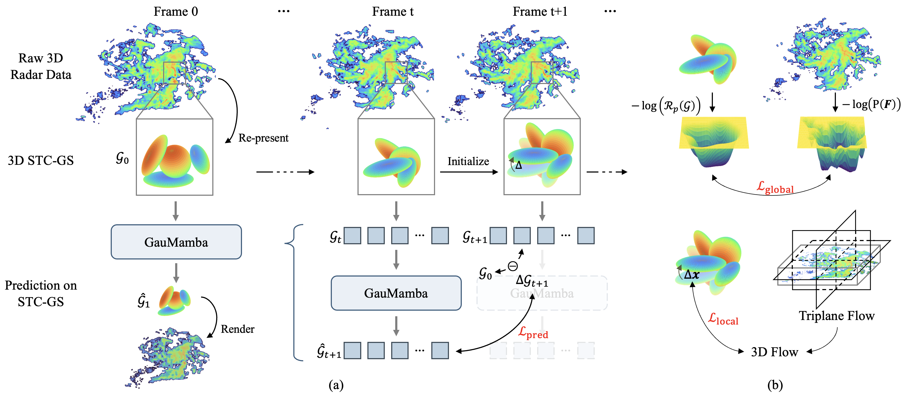
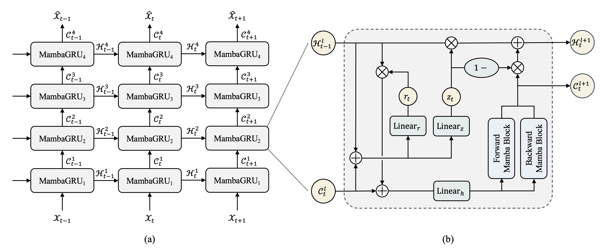

Weather nowcasting is an essential task that involves predicting future radar echo sequences based on current observations, offering significant benefits for disaster management, transportation, and urban planning. Current prediction methods are limited by training and storage efficiency, mainly focusing on 2D spatial predictions at specific altitudes. Meanwhile, 3D volumetric predictions at each timestamp remain largely unexplored.
To address such a challenge, we introduce a comprehensive framework for 3D radar sequence prediction in weather nowcasting, using the newly proposed SpatioTemporal Coherent Gaussian Splatting (STC-GS) for dynamic radar representation and GauMamba for efficient and accurate forecasting. Specifically, rather than relying on a 4D Gaussian for dynamic scene reconstruction, STC-GS optimizes 3D scenes at each frame by employing a group of Gaussians while effectively capturing their movements across consecutive frames. It ensures consistent tracking of each Gaussian over time, making it particularly effective for prediction tasks. With the temporally correlated Gaussian groups established, we utilize them to train GauMamba, which integrates a memory mechanism into the Mamba framework. This allows the model to learn the temporal evolution of Gaussian groups while efficiently handling a large volume of Gaussian tokens. As a result, it achieves both efficiency and accuracy in forecasting a wide range of dynamic meteorological radar signals.
The experimental results demonstrate that our STC-GS can efficiently represent 3D radar sequences with over 16× higher spatial resolution compared with the existing 3D representation methods, while GauMamba outperforms state-of-the-art methods in forecasting a broad spectrum of high-dynamic weather conditions.
Our work is composed of two main components. First, we introduce an efficient re-representation method that converts voluminous 3D radar sequence data into a nearly lossless SpatioTemporal Coherent Gaussian representation. Second, we propose a memory-augmented, Mamba-based predictive model that forecasts the evolution of these Gaussian representations.
In this task, the Gaussian representation must not only faithfully recover the original 3D radar data but also effectively capture and embed dynamic scene information for prediction. This ensures that the representation provides predictive and traceable implicit features for downstream tasks. To meet this objective, each Gaussian is designed to closely track the motion of its corresponding reconstructed region and to consistently re-represent the same spatial part over time-properties that we collectively term SpatioTemporal Coherent Gaussians. Besides, we find that incorporating spatiotemporal consistency not only enables the learning and prediction of the 3D Gaussian-based representation but also further enhances the reconstruction quality.
To obtain such a representation, we propose a Bidirectional Reconstruction Scheme that incorporates both Local Detail and Global Trend Constraints. In the backward reconstruction stage, the model performs a pre-reconstruction, retaining information about the growth and dissipation of the Gaussians along the temporal axis. This is followed by a forward reconstruction stage that refines the Gaussian parameters using the pre-reconstruction as a reference. For further technical details, please refer to the original manuscript.
The conventional Mamba sequence-to-sequence model, renowned for its linear complexity, cannot be directly applied to our forecasting task. A robust predictive model in our scenario must not only utilize the immediate past frame to predict subsequent changes but also maintain a memory of the entire historical sequence—from the first frame through the current one. To achieve this, we augment the Mamba architecture with a memory mechanism by integrating GRU modules into the Mamba blocks. This improvement endows the model with the capacity to capture long-range spatiotemporal dependencies, enabling it to accurately predict the evolution of each Gaussian.
The experimental data consists of three-dimensional volumetric data. However, since such data is not easily visualized in an intuitive manner, we selected representative cross-sections for visualization.
Our proposed method preserves finer details and ensures consistent accuracy throughout the reconstruction of the entire sequence.
We further visualize the changes in the spatial distribution of Gaussians during the reconstruction process. It can be observed that the motion of all Gaussians aligns well with the movement of clouds in the ground truth. Moreover, since the reconstruction results are fully 3D, you can freely explore radar cross-sections at different altitudes by adjusting the slider below, allowing you to examine both the reconstructed radar profiles and the motion of Gaussians at each horizontal level.
Our experiments demonstrate that existing 3D radar prediction models struggle with high-resolution training, making them impractical for large-scale predictions. These methods can only be trained at lower resolutions, requiring upsampling for evaluation. In contrast, our approach enables direct high-resolution training and prediction by maintaining memory efficiency, scaling linearly with the number of Gaussian primitives. Besides, our approach can preserve fine details and high-value regions.
@inproceedings{
wang2025highdynamic,
title={High-Dynamic Radar Sequence Prediction for Weather Nowcasting Using Spatiotemporal Coherent Gaussian Representation},
author={Ziye Wang and Yiran Qin and Lin Zeng and Ruimao Zhang},
booktitle={The Thirteenth International Conference on Learning Representations},
year={2025},
url={https://openreview.net/forum?id=Cjz9Xhm7sI}
}